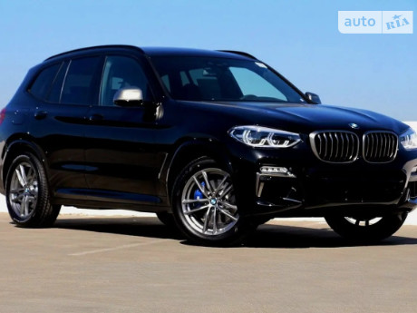
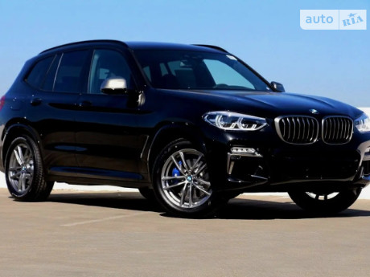

Как показала практика, большинство мировых автомобильных предприятий нашего времени в начале своего существования занимались далеко не автопромышленностью. Компания «Bayerisch Motoren Werke AG» (BMW) исключением тоже не стала. Основополагающим началом истории послужило создание, в 1913 год, двух небольших авиамоторных предприятий, создателями которых являлись Карл Рапп и Густав Отто. А случилось это в Мюнхене. Но вот, с началом Первой мировой войны, спрос на авиационные двигатели заметно возрос. Тогда оба немца приняли решение объединиться в одно предприятие. Таким образом, 20 июля 1917 года была зарегистрирована торговая марка «Bayerisch Motoren Werke AG». Соответственно этот день является датой основания бренда, а Рапп и Отто ее основателями.Следующим шагом на пути к продуктивному и запоминающемуся производству стало создание логотипа. Тут уж существует две версии. Согласно первой, круг с четырьмя секторами серебристого и синего цветов означает вращающийся пропеллер. Видимо дань прошлому. А вот вторая версия утверждает, что в эмблеме отображен национальный бело-синий флаг Баварии. Тут уж, конечно, кому какой вариант больше по душе.Исследуя всю историю существования «Bayerisch Motoren Werke AG» от начала и до наших дней, отчетливо просматриваются спады производства, за которыми шёл явный успех. Так, например, после Первой мировой войны немецкому производству, согласно Версальскому договору, было категорически запрещено заниматься выпуском авиадвигателей. В этот период и начались первые проблемы компании – возник вопрос чем заниматься дальше. Но немцы народ находчивый. Завод перепрофилировали и занялись производством мотоциклетных двигателей, а в последствии и самими мотоциклами. Таким образом, в 20-х годах наблюдался значительный подъём компании, а выпускаемые ими мотоциклы прославились своими скоростными достоинствами.
Известный факт, что после возобновления производства авиадвигателей, на одном из самолетов с двигателем компании «Bayerisch Motoren Werke AG», был установлен мировой рекорд – достижение высоты в 9760 метров.Кроме того, «BMW» сотрудничало с СССР по секретному договору, согласно которому вторые получали новенькие авиадвигатели. Именно благодаря авиационным запчастям «BMW» было совершенно большинство перелетов в 30-х годах ХХ века.1923 год стал еще одним удачным этапом в истории «BMW». Был выпущен первый мотоцикл R32. Но главное не это. Знаменательным событием стала победа этого агрегата в международных мотогонках, завоевав доверие и признание.Свой первый автомобиль компания выпустила только аж в 1932 году – модель называлась «BMW 3/15 PS». Главным преимуществом автомобиля была четырёхступенчатая коробка передач, имея которую, модель опережала своих конкурентов на два года вперед.В 1936 году была выпущена легендарная спортивная модель «BMW 328». С этого момента, «BMW» начинает активно конкурировать с «Mercedes—Benz». Ведь мерседес выпускался под лозунгом «Автомобиль для пассажира», «BMW» решило акцентировать внимание на удобстве водителя. Значительное поражение компания потерпела во времена Второй мировой войны, когда промышленность всей Германии была близка к банкротству. Потеряв все, что было создано за четверть века, пришлось тяжело восстанавливать практически с нуля. Однако не успев порадоваться новым начинаниям, компания снова оказалась в финансовом кризисе.
 
